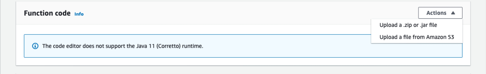

Deploy a Micronaut application to AWS Lambda Java 11 Runtime
Learn how to distribute a Kotlin Micronaut application to AWS Lambda 11 Runtime
Authors: Sergio del Amo
Micronaut Version: 2.0.1
1 Getting Started
Please, read about Micronaut AWS Lambda Support to learn more about different Lambda runtime, Triggers and Handlers and how to integrate with a Micronaut application.
In this guide, we are going to deploy a Micronaut Application to AWS Lambda. If your Lambda integrates with API Gateway via a Lambda Proxy, a Micronaut function of type Application with the aws-lambda feature is a good fit. Specially, when you have multiple endpoints which you wish to delegate to a single Lambda.
1.1 What you will need
To complete this guide, you will need the following:
-
Some time on your hands
-
A decent text editor or IDE
-
JDK 1.8 or greater installed with
JAVA_HOMEconfigured appropriately
You will need also an AWS Account.
1.2 Solution
We recommend you to follow the instructions in the next sections and create the app step by step. However, you can go right to the completed example.
-
Download and unzip the source
or
-
Clone the Git repository:
git clone https://github.com/micronaut-guides/mn-application-aws-lambda-java11-kotlin.git
Then, cd into the complete folder which you will find in the root project of the downloaded/cloned project.
2 Writing the App
Create a micronaut application with the aws-lambda feature using the CLI:
% mn create-app example.micronaut.complete --lang kotlin --features aws-lambdaor use Micronaut Launch

2.1 Code
The generated application contains a BookController. It responds to POST request to /.
package example.micronaut
import io.micronaut.http.annotation.Body
import io.micronaut.http.annotation.Controller
import io.micronaut.http.annotation.Post
import java.util.UUID
import javax.validation.Valid
@Controller (1)
open class BookController {
@Post (2)
open fun save(@Valid @Body book: Book): BookSaved { (3)
val bookSaved = BookSaved()
bookSaved.name = book.name
bookSaved.isbn = UUID.randomUUID().toString()
return bookSaved
}
}| 1 | The class is defined as a controller with the @Controller annotation mapped to the path / |
| 2 | The @Post annotation is used to map HTTP request to / to the the save method. |
| 3 | Add the @Valid annotation to any method parameter’s object which requires validation. |
The controller’s method parameter is a Book object:
package example.micronaut
import io.micronaut.core.annotation.Introspected
@Introspected (1)
class Book {
var name: String? = null
}| 1 | Annotate the class with @Introspected to generate the Bean Metainformation at compile time. |
It returns a BookSaved object:
package example.micronaut
import io.micronaut.core.annotation.Introspected
@Introspected (1)
class BookSaved {
var name: String? = null
var isbn: String? = null
}| 1 | Annotate the class with @Introspected to generate the Bean Metainformation at compile time. |
The generated tests illustrates how the code works when the lambda gets invoked:
package example.micronaut;
import com.amazonaws.serverless.proxy.internal.testutils.AwsProxyRequestBuilder
import com.amazonaws.serverless.proxy.internal.testutils.MockLambdaContext
import com.amazonaws.services.lambda.runtime.Context
import com.fasterxml.jackson.databind.ObjectMapper
import io.micronaut.http.HttpHeaders
import io.micronaut.http.HttpMethod
import io.micronaut.http.HttpStatus
import io.micronaut.http.MediaType
import org.junit.jupiter.api.Assertions
import org.junit.jupiter.api.Test
import io.micronaut.function.aws.proxy.MicronautLambdaHandler
class BookRequestHandlerTest {
@Test
fun testBookController() {
val handler = MicronautLambdaHandler() (1)
val book = Book()
book.name = "Building Microservices"
val objectMapper = handler.applicationContext.getBean(ObjectMapper::class.java)
val json = objectMapper.writeValueAsString(book)
val request = AwsProxyRequestBuilder("/", HttpMethod.POST.toString())
.header(HttpHeaders.CONTENT_TYPE, MediaType.APPLICATION_JSON)
.body(json)
.build()
val lambdaContext: Context = MockLambdaContext()
val response = handler.handleRequest(request, lambdaContext) (3)
Assertions.assertEquals(response.statusCode, HttpStatus.OK.code)
val bookSaved: BookSaved = objectMapper.readValue(response.body, BookSaved::class.java)
Assertions.assertNotNull(bookSaved)
Assertions.assertEquals(bookSaved.name, book.name)
Assertions.assertNotNull(bookSaved.isbn)
handler.applicationContext.close() (2)
}
}| 1 | When you instantiate the Handler, the application context starts. |
| 2 | Remember to close your application context when you end your test. You can use your handler to obtain it. |
| 3 | You don’t invoke the controller directly. Instead, your handler receives a AWS Proxy Request event which it is routed transparently to your controller. |
3 Lambda
3.1 Create Function
Create a Lambda Function. As a runtime, select Java 11 (Correto).

3.2 Upload Code
Generate a FAT JAR of your app with ./gradlew shadowJar and upload it.

3.3 Handler
As Handler, set:
io.micronaut.function.aws.proxy.MicronautLambdaHandler
3.4 Test
You can test it easily. As Event Template use apigateway-aws-proxy to get you started:

You should see a 200 response:
4 Next Steps
Read more about Micronaut AWS Lambda Support